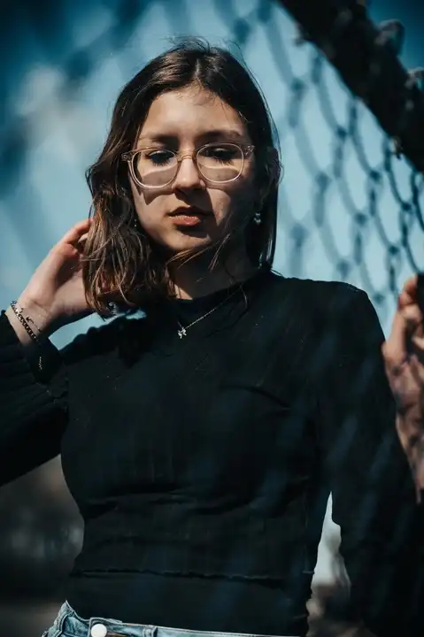
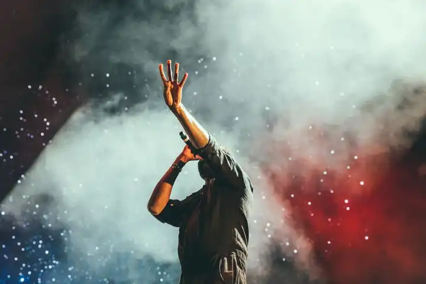
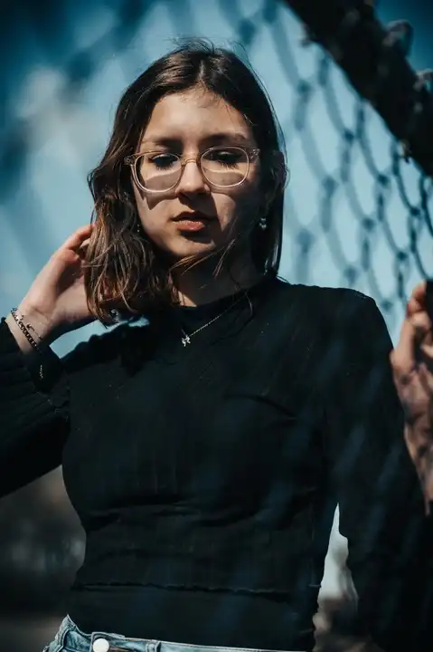
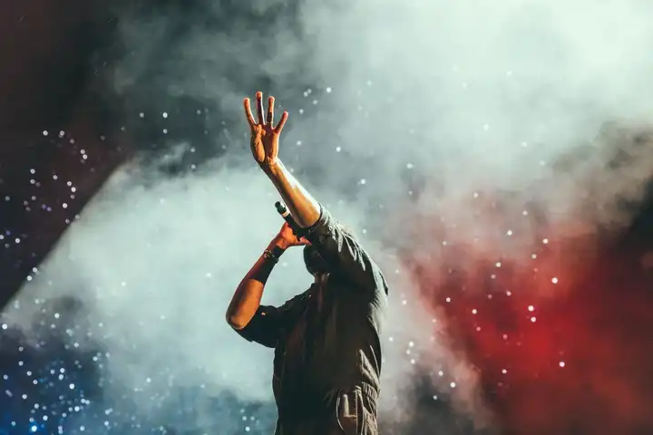

Découvrez Nina Carducci - Votre Photographe à Bordeaux
Devenir photographe a toujours été une évidence pour moi, comme une vocation naturelle. Capturer un instant, une émotion, un lieu ou une lumière et les immortaliser est ce qui me passionne profondément.Tout au long de notre vie, nous cherchons le bonheur, et lorsque nous le trouvons, nous souhaitons le capturer à travers des photographies pour le partager avec ceux qui comptent pour nous, ou avec le monde entier. C'est ce que je vous propose : immortaliser ces moments précieux à travers mon regard unique, mon approche artistique et ma technique. Chaque photo devient ainsi un trésor où vous pourrez retrouver amour, bonheur, tendresse et lumière à chaque regard.
Explorez le Portfolio de Nina Carducci
 



Un portrait n’est pas une ressemblance. Dès lors qu’une émotion ou qu’un fait est traduit en photo, il cesse d’être un fait pour devenir une opinion. L’inexactitude n’existe pas en photographie. Toutes les photos sont exactes. Aucune d’elles n’est la vérité.
Mes Services Photographiques à Bordeaux
Shooting photo
Pour capturer vos moments les plus précieux et garder un souvenir impérissable. Je me déplace en Île-de-France pour réaliser vos photos
350€/demi journée
Matériel, déplacement inclusRetouches
Vous souhaitez retoucher vos photos pour un résultat professionnel ? Bénéficier d’un rendu optimal pour vos publications
50€/photo
2 AR par photoAlbum photos
Partagez avec vos proches et vos clients les photos des moments partagés ensemble à travers un album photo personnalisé
400€ album A4
30 pages recto/versoDe manière inconsciente, je crois, je guette un regard, une expression, des traits ou une nostalgie capable de résumer ou plus exactement de révéler une vie
Contactez-moi pour un devis personnalisé ou pour discuter de votre projet
N’hésitez pas à m’écrire ! Je vous répondrais en moins de 24 heures